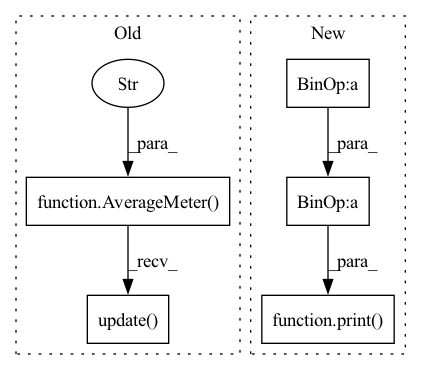

Pattern ID :11792

Before Change
def train(train_loader, model, criterion, optimizer, epoch, gpu, args):
batch_time = AverageMeter("Time", ":6.3f")
data_time = AverageMeter("Data", ":6.3f")
losses = AverageMeter("Loss", ":.4e")
top1 = AverageMeter("Acc@1", ":6.2f")
top5 = AverageMeter("Acc@5", ":6.2f")
speed = AverageMeter("Speed", ":6.2f")
progress = ProgressMeter(
len(train_loader),
[top1, top5, speed, batch_time, losses],
prefix="Epoch: [{}]".format(epoch))
// switch to train mode
model.train()
end = time.time()
for i, (images, target) in enumerate(train_loader):
// measure data loading time
data_time.update(time.time() - end)
images = images.cuda(gpu, non_blocking=True)
target = target.cuda(gpu, non_blocking=True)
After Change
end = time.time()
if i % args.print_freq == 0:
print("Epoch: [{0}][{1}/{2}]\t"
"Time {batch_time.val:.3f} ({batch_time.avg:.3f})\t"
"Speed {3:.3f} ({4:.3f})\t"
"Loss {loss.val:.10f} ({loss.avg:.4f})\t"
"Prec@1 {top1.val:.3f} ({top1.avg:.3f})\t"
"Prec@5 {top5.val:.3f} ({top5.avg:.3f})".format(
epoch, i, len(train_loader),
args.world_size * args.batch_size * args.ngpus_per_node / batch_time.val,
args.world_size * args.batch_size * args.ngpus_per_node / batch_time.avg,
batch_time=batch_time,
loss=losses, top1=top1, top5=top5))
def validate(val_loader, model, criterion, gpu, args):
batch_time = AverageMeter()
In pattern: SUPERPATTERN
Frequency: 3
Non-data size: 5
Instances
Fragment ID: 39621340
Project Name: richardkxu/distributed-pytorch
Commit Name: b5d0793a1bac4df6a31ab0dd1959baee4ab12809
Time: 2020-02-06
Author: richardkxu@gmail.com
File Name: imagenet_ddp_mixprec.py
M Class Name: AnonimousClass
N Class Name: AnonimousClass
M Method Name: train(7)
N Method Name: train(7)
M Parent Class:
N Parent Class:
M File Name: imagenet_ddp_mixprec.py
N File Name: imagenet_ddp_mixprec.py
M Start Line: 257
M End Line: 306
N Start Line: 237
N End Line: 288
'>
Before Change
losses = AverageMeter("Loss", ":.4e")
top1 = AverageMeter("Acc@1", ":6.2f")
top5 = AverageMeter("Acc@5", ":6.2f")
speed = AverageMeter("Speed", ":6.2f")
progress = ProgressMeter(
len(val_loader),
[top1, top5, speed, batch_time, losses],
prefix="Test: ")
// switch to evaluate mode
model.eval()
with torch.no_grad():
end = time.time()
for i, (images, target) in enumerate(val_loader):
images = images.cuda(gpu, non_blocking=True)
target = target.cuda(gpu, non_blocking=True)
// compute output
output = model(images)
loss = criterion(output, target)
// measure accuracy and record loss
acc1, acc5 = accuracy(output, target, topk=(1, 5))
losses.update(loss.item(), images.size(0))
top1.update(acc1[0], images.size(0))
top5.update(acc5[0], images.size(0))
// measure elapsed time
t = time.time() - end
batch_time.update(t)
speed.update(args.world_size*args.batch_size/t)
end = time.time()
if i % args.print_freq == 0:
progress.display(i)
After Change
end = time.time()
if i % args.print_freq == 0:
print("Test: [{0}/{1}]\t"
"Time {batch_time.val:.3f} ({batch_time.avg:.3f})\t"
"Speed {2:.3f} ({3:.3f})\t"
"Loss {loss.val:.4f} ({loss.avg:.4f})\t"
"Prec@1 {top1.val:.3f} ({top1.avg:.3f})\t"
"Prec@5 {top5.val:.3f} ({top5.avg:.3f})".format(
i, len(val_loader),
args.world_size * args.batch_size * args.ngpus_per_node / batch_time.val,
args.world_size * args.batch_size * args.ngpus_per_node / batch_time.avg,
batch_time=batch_time, loss=losses,
top1=top1, top5=top5))
// TODO: this should also be done with the ProgressMeter
print(" * Acc@1 {top1.avg:.3f} Acc@5 {top5.avg:.3f}"
.format(top1=top1, top5=top5))
'>
Fragment ID: 39621279
Project Name: richardkxu/distributed-pytorch
Commit Name: b5d0793a1bac4df6a31ab0dd1959baee4ab12809
Time: 2020-02-06
Author: richardkxu@gmail.com
File Name: imagenet_ddp_mixprec.py
M Class Name: AnonimousClass
N Class Name: AnonimousClass
M Method Name: validate(5)
N Method Name: validate(5)
M Parent Class:
N Parent Class:
M File Name: imagenet_ddp_mixprec.py
N File Name: imagenet_ddp_mixprec.py
M Start Line: 310
M End Line: 346
N Start Line: 292
N End Line: 331
'>
Before Change
def detect(self, **kwargs):
super().detect(**kwargs)
entropy = AverageMeter("entropy", fmt=".4e")
for i, data in enumerate(self.dataset.loader["test"]):
_input, _label = self.model.get_data(data)
entropy.update(self.defense.check(_input), n=_label.size(0))
print(f"{i:<10d}{entropy.avg:<20.4f}")
def check(self, _input) -> float:
h = 0.0
After Change
threshold_low = float(clean_entropy[int(0.025 * len(clean_entropy))])
threshold_high = float(clean_entropy[int(0.975 * len(clean_entropy))])
print(f"Threshold: ({threshold_low:5.3f}, {threshold_high:5.3f})")
percent = float(((poison_entropy < threshold_low)
+ (poison_entropy > threshold_high)).sum().float() / len(poison_entropy))
print("Classification Acc: ", percent)
def check(self, _input) -> torch.Tensor:
_list = []
for i, data in enumerate(self.loader):
'>
Fragment ID: 39621316
Project Name: ain-soph/trojanzoo
Commit Name: 6db9e1093a1c57355371acded3524e02f64baa3a
Time: 2020-08-10
Author: ain-soph@live.com
File Name: trojanzoo/defense/backdoor/strip.py
M Class Name: STRIP
N Class Name: STRIP
M Method Name: detect(1)
N Method Name: detect(1)
M Parent Class: Defense_Backdoor
N Parent Class: Defense_Backdoor
M File Name: trojanzoo/defense/backdoor/strip.py
N File Name: trojanzoo/defense/backdoor/strip.py
M Start Line: 17
M End Line: 21
N Start Line: 18
N End Line: 34